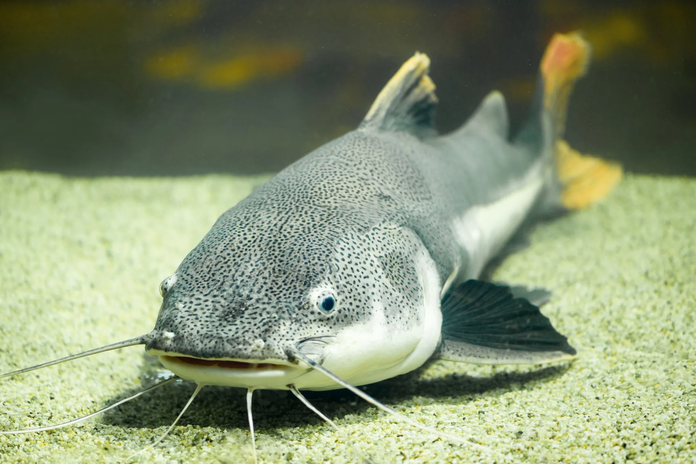

Se reconoce por sus “bigotes” llamados barbillas.
Vive principalmente en ríos y lagos de agua dulce.
Muchos son nocturnos y se alimentan de peces pequeños, insectos y restos orgánicos.
Algunas especies pueden alcanzar gran tamaño.